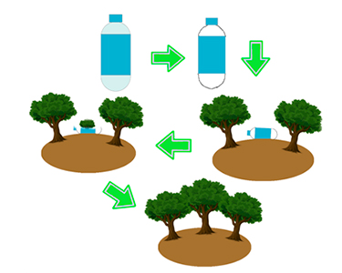

Flasken
Rul ned og læs mere
Vores produkt tilbyder en mulighed for at give tilbage til naturen med hvert brug. Vi har fået de mest miljøbevidste forskere til at designe en flaske som er 100% naturvenlig. Den kan smides ud i naturen uden at den gør nogen form for skade mod dyr eller planteliv. Samtidig indeholder flasken frø i bunden, der ender med at spire efter flasken er nedbrudt i skovbunden. Dermed kan du nemt og simpelt være med til at øge væksten af danske skover.